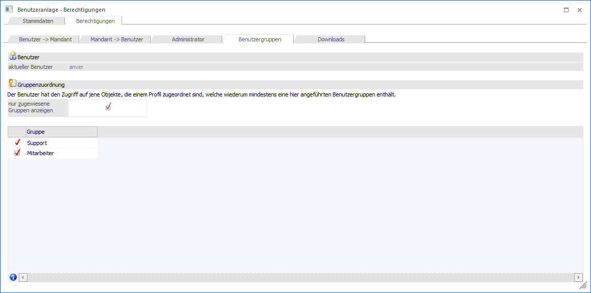
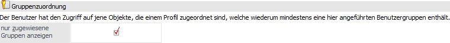
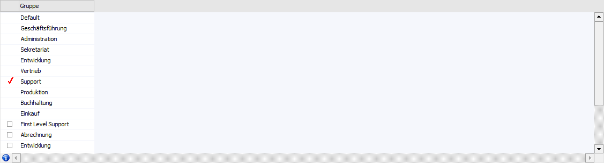
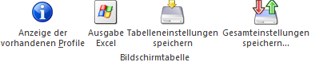

Benutzeranlage - Register "Berechtigungen - Benutzergruppen"
Im Unterregister "Benutzergruppen" kann der Benutzer einer oder mehreren Benutzergruppen zugeordnet werden.
Achtung
Die Gruppenzuordnung ist ein wichtiger Bestandteil für die Gestaltung der Berechtigungsprofile.

Benutzer

Ø aktueller Benutzer
An dieser Stelle wird der aktuell gewählt Benutzer angezeigt. Für diesen werden die folgenden Einstellungen getätigt.
Gruppenzuordnung

Ø nur zugewiesene Gruppen anzeigen
Durch die Aktivierung dieser Option werden nur die Benutzergruppen angezeigt, denen der Benutzer bereits zugeordnet ist. Wird die Option deaktiviert, dann werden alle vorhandenen Benutzergruppen angezeigt und der Benutzer kann weiteren Benutzergruppen zugeordnet werden.
Tabelle "Benutzergruppen"

In der Tabelle werden alle angelegten Benutzergruppen angezeigt bzw. nur die bereits zugeordneten (gemäß der Option "Nur zugewiesene Gruppen anzeigen").
Ø Zuordnung
Mit Hilfe der Checkbox kann jeder Benutzer beliebig vielen Benutzergruppen zugeordnet werden.
Achtung
Jedem Benutzer kann nur einer "System-Benutzergruppe" (Benutzergruppe 0 bis 9) zugeordnet werden! Dieses geschieht über die Zuordnung im Register Stammdaten (Feld "Gruppe"). Benutzergruppen selber können im Programm Benutzer Gruppen angelegt bzw. verändert werden.
Tabellenbuttons

Ø Anzeige der vorhandenen Profile
Durch Anklicken des Buttons "Anzeige der vorhandenen Profile" kann eine Übersicht über vorhandene Profile aufgerufen werden (siehe auch Profil auswählen). Damit kann leicht herausgefunden werden, welche Benutzergruppen auf welche Datenbereiche zugreifen kann.
Ø Ausgabe Excel
Durch Anwahl des Buttons "Ausgabe Excel" wird der Inhalt der Tabelle an Microsoft Excel übergeben.
Ø Tabelleneinstellungen speichern
Die Spalten einer Tabelle können grundsätzlich an beliebige Positionen verschoben, bzw. in der Breite entsprechend angepasst werden. Durch Anwahl des Buttons "Tabelleneinstellungen speichern" werden die Einstellungen benutzerspezifisch gespeichert und bei dem nächsten Aufruf des Programmpunktes wieder vorgeschlagen.
Ø Gesamteinstellungen speichern
Im Gegensatz zu "Tabelleneinstellungen speichern" können mit "Gesamteinstellungen speichern" mehrere Tabellenaufbauten gespeichert und nach Wunsch geladen werden. Zusätzlich werden Sonderfunktionen der Tabelle (z.B. "Spalte gruppieren") ebenfalls bei der Speicherung bedacht.